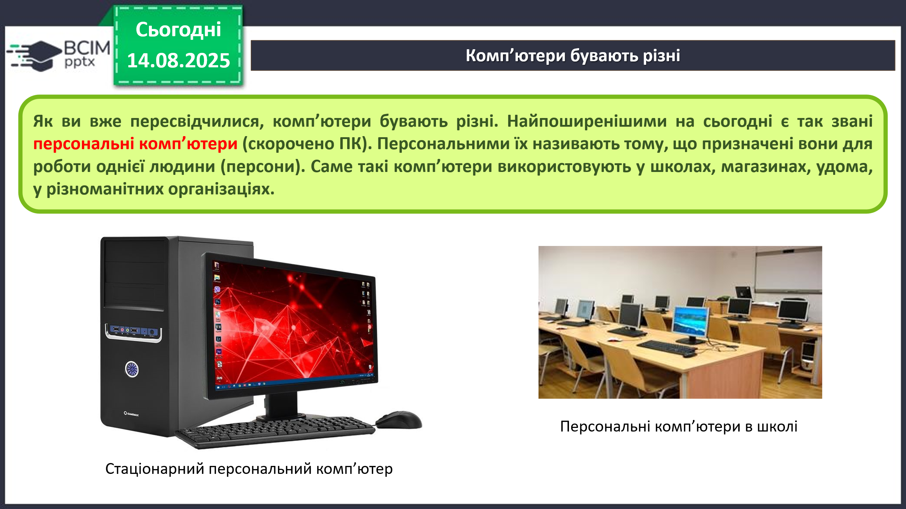
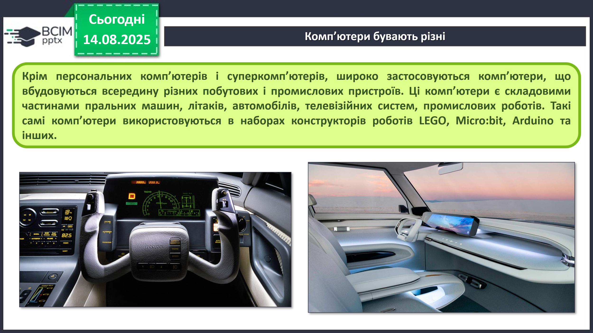
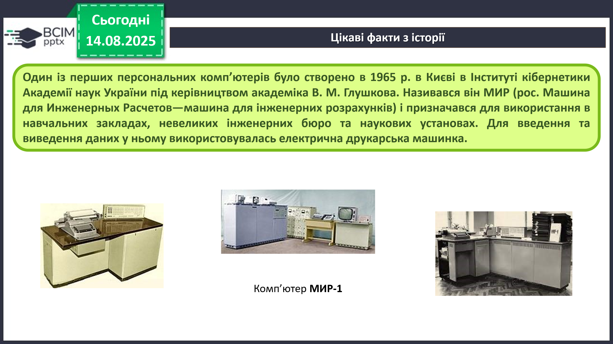
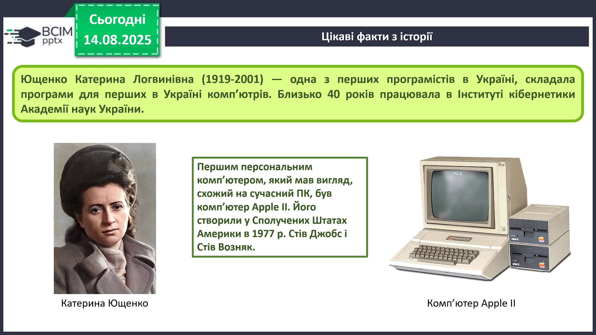
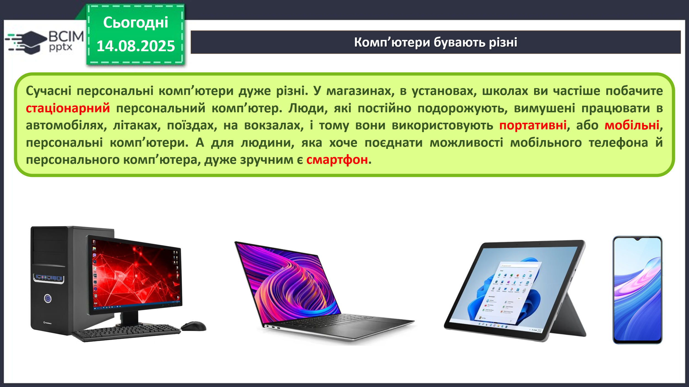
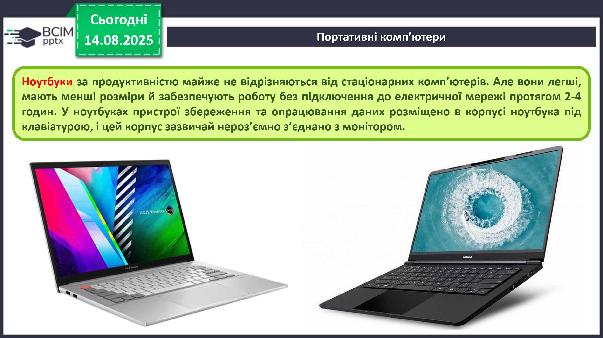
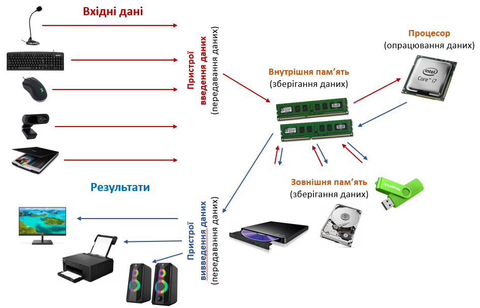

HUB 56 · 5 клас · Урок №6
Комп’ютери. Персональний комп’ютер
Комп’ютер як інформаційна система.
Комп’ютери бувають різні
Персональний комп’ютер (ПК) призначений для роботи однієї людини — персони. Такі комп’ютери використовують у школах, магазинах, удома та в різних організаціях.

Суперкомп’ютери виконують дуже складні обчислення, наприклад розраховують рух космічних об’єктів. З ними можуть одночасно працювати багато користувачів із різних країн.
Вбудовані комп’ютери є складовими пральних машин, літаків, автомобілів, телевізійних систем, промислових роботів і навчальних конструкторів LEGO, Micro:bit та Arduino.

Цікаві факти з історії
Один із перших персональних комп’ютерів створили у 1965 році в Києві в Інституті кібернетики Академії наук України під керівництвом академіка В. М. Глушкова. Він називався МИР — машина для інженерних розрахунків і використовувався в навчальних закладах, інженерних бюро та наукових установах.

Катерина Логвинівна Ющенко (1919–2001) — одна з перших програмісток України. Вона складала програми для перших українських комп’ютерів і близько 40 років працювала в Інституті кібернетики.

Сучасні персональні комп’ютери
Стаціонарний персональний комп’ютер зазвичай постійно розміщується на робочому місці. Портативні, або мобільні, комп’ютери легко переносити та використовувати поза домом чи школою.

Ноутбук
Ноутбук — портативний персональний комп’ютер. Він легший і менший за стаціонарний ПК та може працювати від акумулятора. Пристрої збереження й опрацювання даних розміщено в корпусі під клавіатурою.

Тачпед — чутливий до дотиків майданчик, який у ноутбуці виконує роль миші.
Планшет і смартфон
Планшетний комп’ютер має сенсорний екран і використовується для перегляду відео, прослуховування аудіо, читання електронних книжок та роботи в Інтернеті.
Смартфон поєднує можливості мобільного телефона й персонального комп’ютера. Він дає змогу передавати, зберігати та опрацьовувати дані, працювати в Інтернеті, створювати фотографії й відео, навчатися, користуватися навігацією та керувати іншими пристроями.
Комп’ютер як інформаційна система

Комп’ютер здійснює всі основні інформаційні процеси: передавання, опрацювання та зберігання повідомлень. Різні пристрої швидко обмінюються даними між собою.
- Пристрої введення передають дані до комп’ютера.
- Процесор опрацьовує дані та виконує команди.
- Внутрішня і зовнішня пам’ять зберігають дані.
- Пристрої виведення передають результати людині.
Комп’ютер також приймає і відправляє повідомлення, обмінюючись ними з людиною або з іншими комп’ютерами. Саме тому комп’ютер є інформаційною системою.